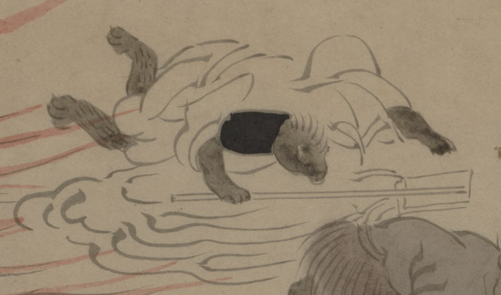

白い浄衣をまとった獣の化物。全身は黒っぽい毛皮に覆われている。烏帽子をかぶり、右手に幣を持ったまま、うつぶせに倒れている。
出典：親書誌：U426_nichibunken_0150：付喪神絵詞；ツクモガミエコトバ／日付：2010／資源識別子：U426_nichibunken_0150_0087_0000
Copyright (c)2010- International Research Center for Japanese Studies, Kyoto, Japan. All rights reserved.